ai for social good
Second Place at the AI for Social Good Hackathon at Desjardins Lab.
An augmented reality application that uses computer vision to detect food products. Users can use this application to scan food items in their fridge and receive product-specific information about shelf life, storage, food preparation, and expiration warnings.
Link to project
smart traffic at mission hacks
I attended the hackathon Mission Hacks in April 2018, hosted by Randstadt and Intact. The objective was to design solutions for infrastructure, education, health, and economy on an earth-like planet. Our team, Team SmartCity, was made up of members with backgrounds in urban geography, systems engineering, computer science, and data science. Our mission was to use design and technology to tackle urban problems in innovative ways.
The urban problem that we addressed was traffic congestion. Traffic has negative consequences for the individual, the community, and the environment: it inconveniences the individual (stress, road rage, loss of productivity), slows down emergency vehicles (police cars, ambulances, firetrucks), and increases pollution.
We developed a web application called "Smart Traffic" for the phone and desktop computer. Smart Traffic allows users to input a region in New South Wales and receive live traffic information about motorways in that region. The application returns a live image for each motorway with a prediction about the level of traffic congestion (low, medium, high) based on an image-recognition algorithm.
How it works: When the user inputs a region, live traffic images are obtained from Live Traffic NSW, where they are updated every 60 seconds. A python script applies the image recognition machine learning algorithm to each image, predicting a congestion level between 0 and 1. The results are channelled into the web application.
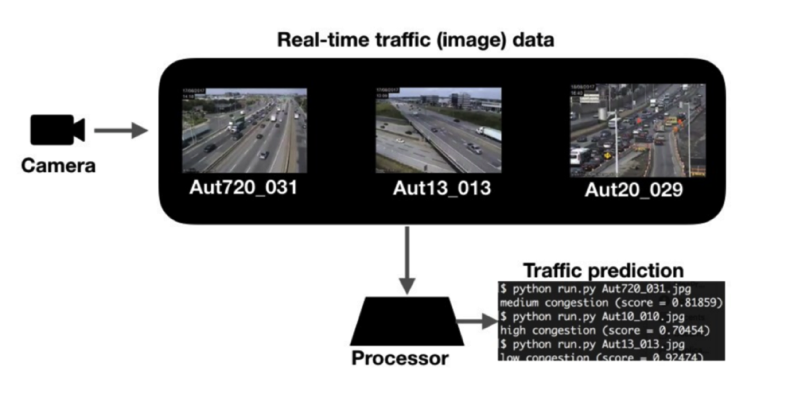The project is not available online yet. Below is a screenshot of a demo. After the user chooses the region Sydney South, the application returns a feed of images with the following information:
Title: 5 Ways (Miranda)
View: 5 Ways The Boulevarde looking west towards Sutherland
Predict: low congestion (score = 0.98741).
Direction: W
Since the hackathon, we have formed a growing community of smart city enthusiasts exploring open data to solve urban problems.
data analytics at the esa
At the European Space Agency, I gave the Agency feedback on which space missions and countries produced the highest number of scientific papers and why.
I was given data on the number of annual publications for ten space missions and the number of annual publications by seven countries for three of those missions. I then researched the missions in-depth, gathering information on their launch dates, lifespans, objectives, instruments, and the countries involved.
I imported the data into the analytics software Microstrategy and played with data visualizations on a dashboard. By experimenting with heat maps, bubble grids, line graphs, bar graphs, and pie graphs, I learned which visualizations were best suited to represent the data and set out to design a layout for my final two documents.
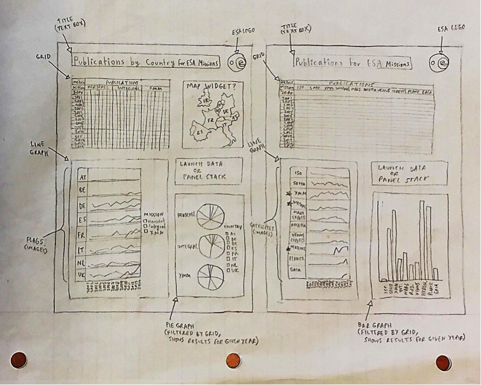The first document is titled “Publications for ESA missions” and visualises the publications for ten missions (Gaia, Herschel, INTEGRAL, ISO, Mars Express, Planck, Rosetta, SOHO, Venus Express, and XMM-Newton) over the last 15 years. This document enables the user to look at the data for any combination of missions over time (line graphs) as well as the data for all missions each individual year (bar graphs).
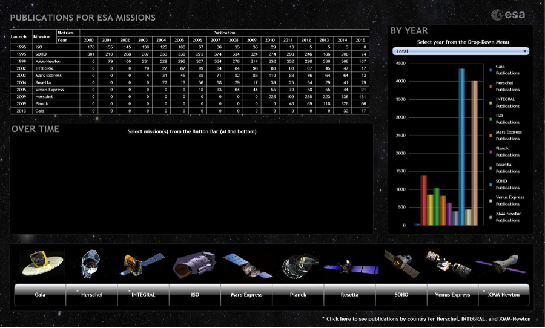The second document is titled “Publications by Country for ESA Missions“ and visualises the publications by seven countries (Austria, Belgium, France, Germany, Italy, the Netherlands, Spain, and the United Kingdom) for three missions (Herschel, INTEGRAL, and XMM-Newton) over the last 15 years. On this document, the user can look at the data for any individual country over time (line graphs), the data for all countries each individual year (pie graphs), and the data for any combination of missions over time and by year.
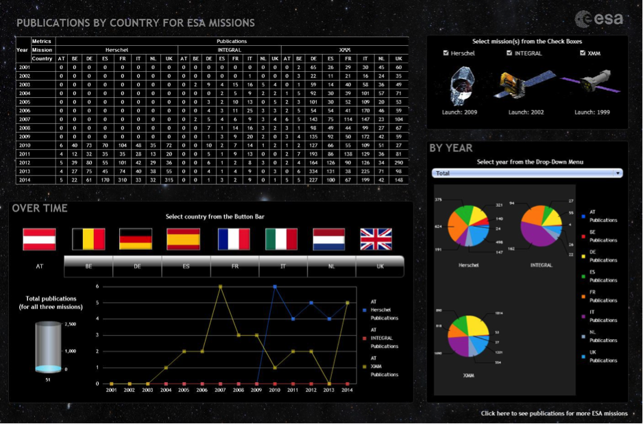With the help of these interactive documents, I could study the long-term and the annual impact of each mission, and also compare the impacts of various groups of missions (e.g. old vs. new missions, planetary science missions, missions launched together). My analytical approach was to break down each long-term impact and compare trends surrounding the launch date, the year the first publications appeared, the year the publications peaked, the magnitude of the peak, and the direction of the publications post-peak.
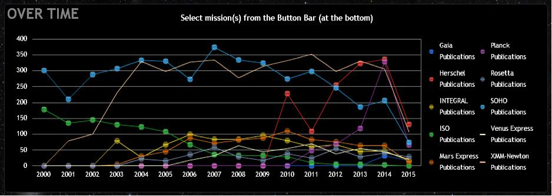 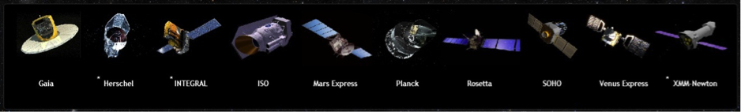As a result, I was able to obtain useful information from these interactive visualizations and discover trends across the impacts. I observed that there were young peaking missions (Gaia, Herschel, and Planck), middle-aged stabilising missions (Mars Express, Rosetta, and Venus Express), and old declining missions (SOHO, ISO), as well as some outliers (XMM-Newton, INTEGRAL). I conclude that Microstrategy is a valuable tool for comparison and analysis and can be effectively used to explore trends in mission publications. You can learn more about the project in the report below.
neuroscience data platform
LORIS (Longitudinal Online Research and Imaging System) is an open source framework for storing and processing behavioral, clinical, neuroimaging and genetic data. My role is to contribute to the design, coding, maintenance of this web-based management software and make it suitable for large datasets from longitudinal and multi-site studies.
gis and urban agriculture
The objective of this semester-long project was to use GIS to find a suitable plot of land for a community garden in Montreal. I defined suitability in terms of land availability, distance from contamination, access by community, and proximity to target group. Below you can find my presentation and final report.
socio-economic applications of gis
In the Geographic Information Centre at McGill University, I completed various labs on the socioeconomic applications of GIS. The GIS techniques I explored were:
Using wetland, road, and county boundary data to figure out which wetlands in the National Wetlands Inventory fall within and outside of a 1 kilometer buffer of all roads in county Randolph, Illinois.
Finding the ideal location of a high-end audio store, Paradigm, in the Plateau neighborhood of Montreal based on target market characteristics (male, aged 30-44, annual income > 35K), demographic data in census tracts, and distance from competition.
Determining the shortest route for a walking tour of Old Montreal, starting and ending at Roddick Gates (McGill University) and including 12 tourist stops.
Checking the evenness of CLSCs (free health clinics) in downtown Montreal. I determined which five of seven clinics could be closed to cut costs with minimal impacts on accessibility and then tested if a new clinic could be built at a better location.
Geo-referencing an airphoto and building footprints of McGill Campus with street network data, creating a base map of the building footprint with building height values, and using interpolation to transform the 2D surface into a 3D model.
coding challenges
The code for these assignments cannot be shared publicly.
This mini-google program is written in Java and explores a portion of the web. The portion of the web is a subset of websites on McGill's Computer Science domain. The user types in a single-word query and the program returns the most relevant website and the website rank.
How it works:
The program starts at a given url (http://www.cs.mcgill.ca/index.html) and does a traversal of the mini internet using breadth-first search. On each website, it parses the html content an updates a word index hashmap where the keys are words and the values are the list of urls that contain each word (String word, LinkedList urls). The program adds vertices and edges to a directed graph representing the internet (where vertices represent websites and edges represent ingoing and outgoing references). Once it has built the internet graph and created the word index, it uses a page ranking algorithm to analyze the structure of the graph and compute the page rank of each url:
Page ranking algorithm where C(v) is the out-degree of vertex v and w1 ... wn are the vertices that have edges pointing toward v
PR(v) = 0.5 + 0.5 * (PR(w1)/C(w1) + PR(w2)/C(w2) + ... + PR(wn)/C(wn);
Finally, the search engine uses the word index and page ranks to return the best url for the user's specific query (i.e. the highest ranking url that contains the query).
This program is written in python and captures the essence of automated spell correction. It takes a text file as input (i.e. an ebook) and computes the frequency of word-pairs in the text file by making a dictionary where the keys are word-pairs and the values are the number of times they appear in the text (i.e. key: str[(word1,word2)], value: frequency). When the user types a pair of words into the program, and if the first word is misspelled, the program uses the difflib.get_close_matches() function to compute ten alternative words that are closest to the first word. The program pairs the alternative words with the second word and returns the word-pair with the highest frequency in the dictionary.
This C program is a two-person text chat that uses plain-text I/O to communicate messages. Two terminals are open and in each terminal, a user runs the program with three arguments: incoming_file outgoing_file username.
For example,
Terminal 1: ./text_chat a.txt b.txt user1
Terminal 2: ./text_chat b.txt a.txt user2
To send messages, the user must be prompted with a "Send:". This prompt appears after a message has been received (and when the first terminal is opened). If a user types in a message, it is saved into the outgoing file as "[username] message".
So if user1 types "hello", it is stored in b.txt as "[user1] hello".
To receive, the program repeatedly checks for new messages in the incoming file. If there is a message and it is different from the previous received message, it is printed in the terminal as "Received: [username] message".
So when user2 receives the message above, the terminal prints "Received: [user1] hello".
The program continues by alternating send and receive until the chat is closed with ctrc-c or ctrl-d.
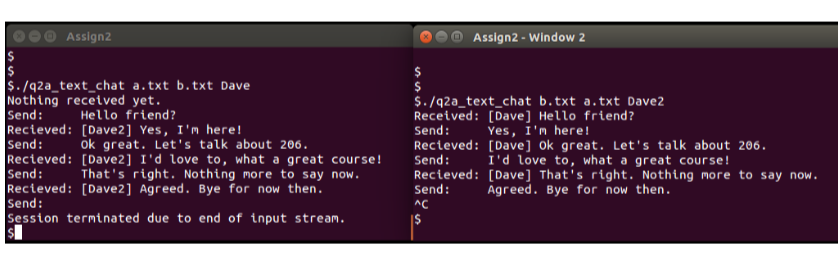
recycling robot
Mini projects is a two-week robot-building competition hosted by McGill Robotics. My team decided to build a recycling robot in response to theme of building a "useful robot". We decided to focus on bottles (glass, paper, plastic, and aluminum) and considered sensors that could detect aluminum, length, transparency and weight. The robot had to include mechanical, electrical, and software components.
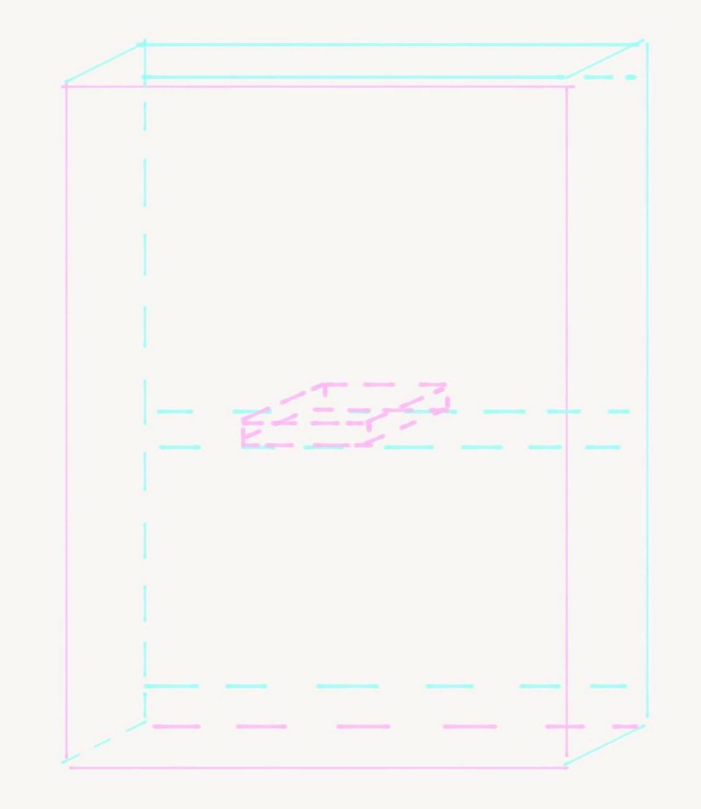 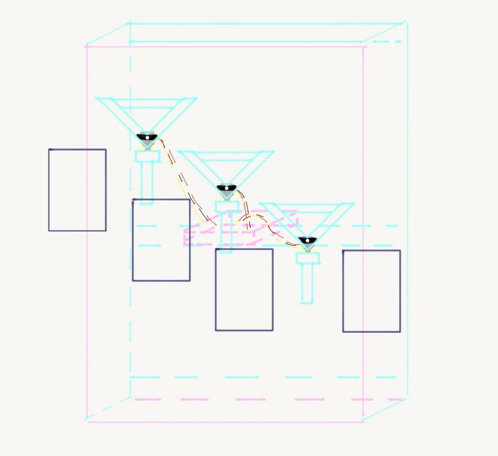For the mechanical structure, we built a sturdy board out of foam with four cardboard boxes attached to it that would collect the four different kinds of bottles. We also attached three foam V-shaped ledges that would rotate left and right and tip the bottles into the boxes. Each V-shaped ledge was attached to a Servo motor that was wired to an Arduino. Due to time constraints, we decided to focus on weight detection and used a load cell to distinguish between weights and sort the bottles accordingly. We ran Arduino code from a computer to control the movement of the servos based on feedback from the load cell.
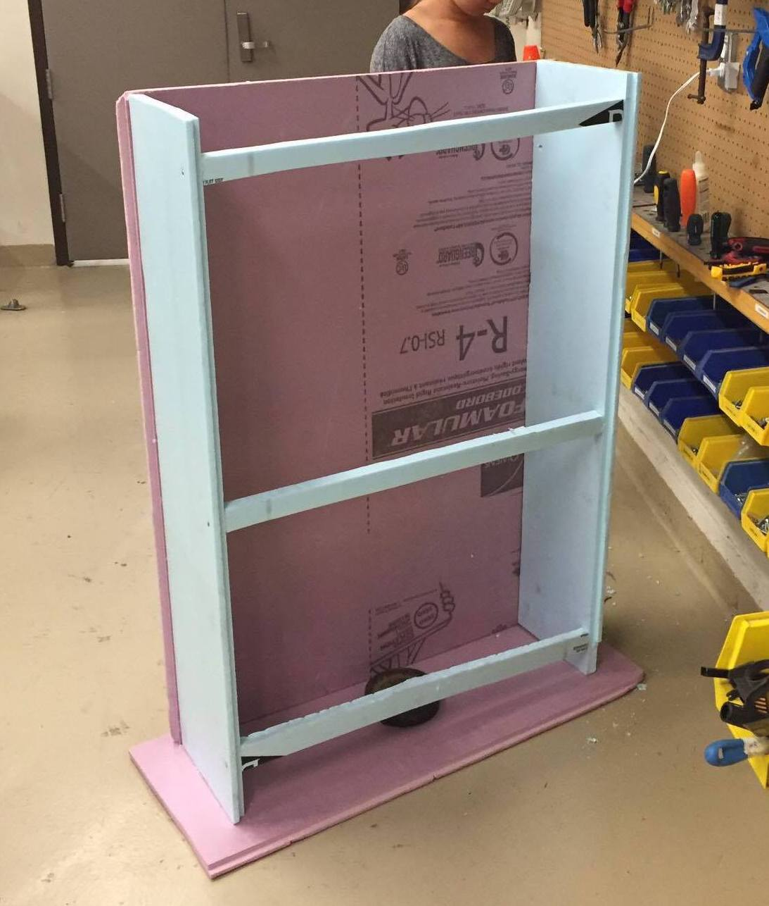 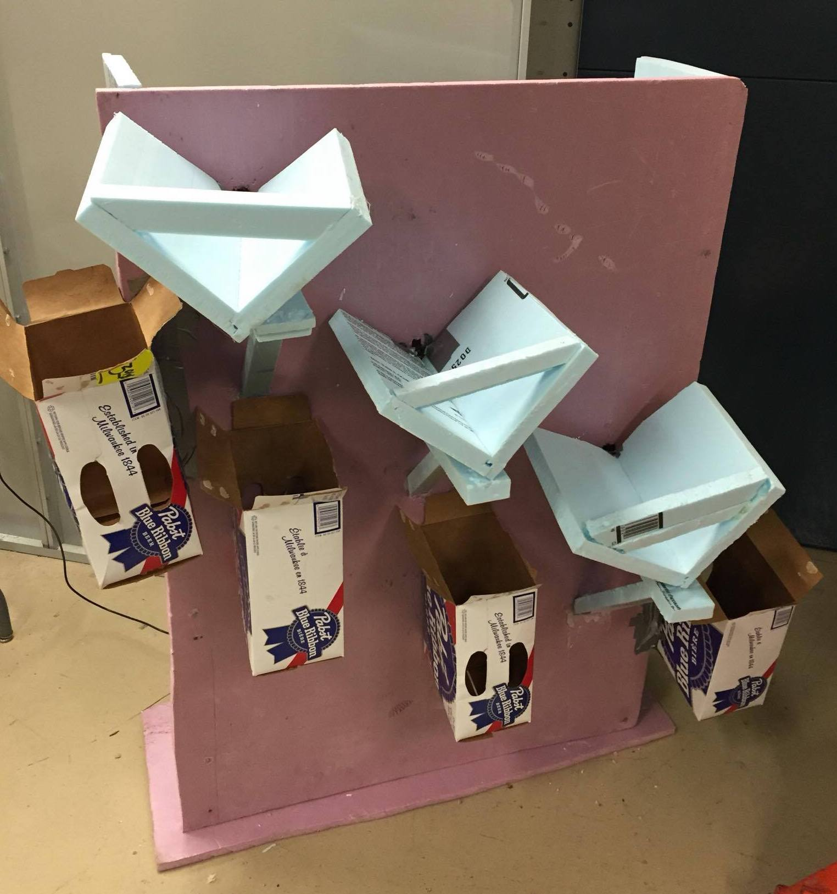essay on the smart city songdo
Essay on the smart city Songdo
mobile applications for urban agriculture
Research paper on using mobile applications to promote urban agriculture in developed and developing areas.
cultural landscape study on 820Plaza
This is a cultural landscape study on a space in Montreal that I undertook for an architecture seminar. I chose to examine a multi-purpose space in Mile-Ex called 820Plaza, an old concrete garage that was turned into a cultural centre for art, music, and selling records and books. The booklet was made using Photoshop and consists of field descriptions, sketches, photographs, and information from interviews and articles. To capture the space from my perspective, I visited the site and neighborhood and included some of my own photographs and digital illustrations.
adobe illustrations